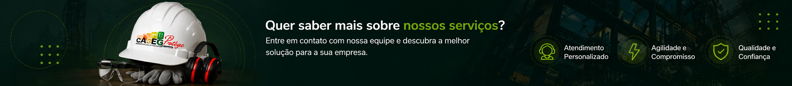

Nossos Serviços
Conheça as soluções que a CASEG Protege disponibiliza para apoiar sua empresa com segurança, técnica e responsabilidade.

Entrar em contatoConheça as soluções que a CASEG Protege disponibiliza para apoiar sua empresa com segurança, técnica e responsabilidade.

Entrar em contato